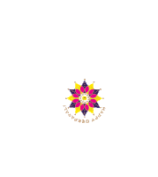
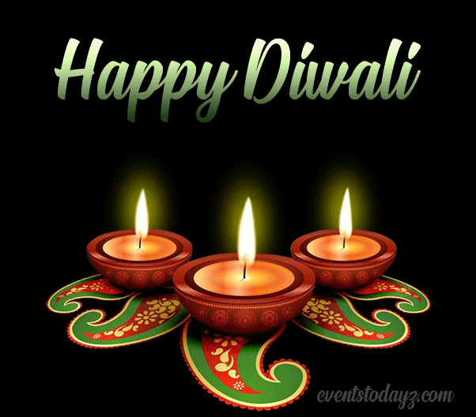

Celebrate the festival of lights with joy and love!
Explore MoreDiwali, also known as the Festival of Lights, is celebrated across India and beyond, symbolizing the victory of light over darkness. It commemorates the return of Lord Rama to Ayodhya after defeating the demon king Ravana, and is a time when families come together to celebrate with lights, sweets, and joy.


While fireworks are a popular way to celebrate, they have harmful effects on the environment. Firecrackers release toxic pollutants into the air, leading to health issues and harming wildlife. This Diwali, let’s pledge to celebrate responsibly.
Diwali traditions vary across regions but commonly include decorating homes with rangoli, lighting oil lamps (diyas), exchanging sweets, and offering prayers for prosperity. Each day of Diwali has its significance, including Dhanteras, Naraka Chaturdashi, Lakshmi Puja, Govardhan Puja, and Bhai Dooj.
People celebrate Diwali with family gatherings, delicious feasts, and festive decor. Children enjoy sparklers, and adults engage in prayers and charity, spreading joy throughout their communities.